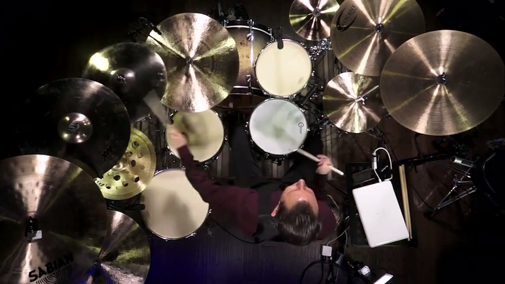

给定视频 · 含错误配声852 × 480 / 25 fps
画面保持原样；五处原声被同一场独奏的其他真实鼓乐句替换。错误声音可以自然成立，却不对应画面里的演奏。
下载任务包：题面、工具说明、视频与无损音轨 ↓接手一段含五处错误配声的现场独奏，结合画面动作和录音自主定位，再从正常片段学习同一套鼓的声音，为缺失的演奏声音重新拟音，交付完整、同步、可编辑的音轨与工程。

只给这一段 87 秒视频与对应音轨。正常区域既是需要保留的录音，也是拟音素材库。
画面保持原样；五处原声被同一场独奏的其他真实鼓乐句替换。错误声音可以自然成立，却不对应画面里的演奏。
下载任务包：题面、工具说明、视频与无损音轨 ↓五段核心不保留该处原声。不能通过撤销移位、变速或滤波恢复，必须依据动作重新制作击打声，并保持现场鼓组的音色与空间感。
下载对应无损 WAV ↓联合检查鼓棒、鼓面、镲片与脚踏线索，判断哪段声音不属于画面演奏，记录实际修改区间。
从可信正常区域提取素材，通过逐击剪辑、采样或合成，恢复击打顺序、力度、重叠与停顿。
输出完整 87 秒 WAV、仅替换音轨的 MP4、素材齐全的 REAPER 工程，以及修改记录。
repaired.wav：87.000 秒，48 kHz，立体声无损音轨，无削波、无非有限采样。repaired.mp4：保留全部 2,175 帧的内容、顺序、速度和时长，仅替换声音。repair.rpp 与 assets/：相对媒体路径，素材齐全，可离线重放与渲染。changes.json：记录实际修改区间、诊断、拟音方法及不确定项，使用测试视频相对秒数。任务要求 Agent 识别“声音本身合理、却与动作不符”的配声，并看懂高速多部件演奏，完成局部拟音：
同场声音素材、连续画面、允许合理拟音的评分方式与完整工具链，共同提供可执行的求解路径：
定位10分、演奏对应50分、自然衔接20分、音色与伪影20分。五处等权；按画面演奏和正常录音上下文评价拟音是否合理。
一对一 tIoU匹配，检查漏报、多报与边界偏差。
程序计算每处时序4分、鼓件结构4分、动态2分；对应真实可辨动作。
GEMINI每处进入1分、退出1分、段内连续性2分；保留停顿与尾声。
GEMINI每处同场音色2分、无新增伪影2分；与正常录音自然融合。
GEMINI定位10分由脚本计算，其余子项由Gemini评审。25 fps满帧图每帧40 ms，结合实际修复音频判断；前后各1.5秒正常录音提供衔接与音色参照。干净参考用于观众试听，隐藏核心原声不参与正式计分。
四个大项分别计分，五处等权；每处演奏对应10分、自然衔接4分、音色与伪影4分。定位由脚本计算；感知项由 Gemini 4 Neon（Medium）依据25 fps满帧图、修复音频及前后各1.5秒正常录音评价。隐藏干净音轨不参与正式计分。
| 子项 | 满分 | 评分方 | 评分规则 | 权重与分档依据 |
|---|---|---|---|---|
| 错误区间定位 | 10（总计） | 确定性脚本 | 预测与五个注错区间一对一匹配，最大化 tIoU 之和 W；预测数为 P，得分＝10 × 2W / (5 + P)。 | 定位是修复的前提，保留10分；不设二元命中阈值，连续 tIoU反映边界偏差，一对一匹配与分母同时惩罚漏报、多报及重复报告。 |
| 子项 | 满分 | 评分方 | 评分规则 | 权重与分档依据 |
|---|---|---|---|---|
| 动作与声音时序 | 4 | Gemini | 依据25 fps满帧图与修复音频判断清楚可见击打的发声时刻、停顿及明显漏配／多配。沿用原时序评审分：新分＝原分 ÷ 4.5 × 4。 | 时序与鼓件结构同等重要，各占20分。25 fps每帧40 ms，按可辨的动作和声音判断，不把30 ms数字差或起音F1设为硬阈值；无法辨认的遮挡、快速回弹不强行逐击推定。 |
| 鼓件与声部结构 | 4 | Gemini | 判断主要鼓件、换鼓顺序、同时击打与滚奏层次。沿用原3分量表：新分＝原分 ÷ 3 × 4；原局部缺陷扣0.5分、主要结构缺陷扣1分，分别对应现0.67、1.33分。 | 与时序等权，避免只有拍点而缺失正确鼓件仍取得高分。局部细节与主要结构后果分档；同一现象不在时序和结构中重复扣相同后果。 |
| 重轻音与动态 | 2 | Gemini | 判断可辨强弱关系、弱奏到滚奏及高潮变化。原评审档位1.5／1／0.5／0分，按比例换成2／1.33／0.67／0分。 | 动态共10分，低于时序、鼓件结构，因为画面推断力度的不确定性更高。四档对应保留、局部偏弱、明显塌陷、整体平板，不要求复刻隐藏原声的精确幅值。 |
| 子项 | 满分 | 评分方 | 评分规则 | 权重与分档依据 |
|---|---|---|---|---|
| 进入接缝 | 1 | Gemini | 结合前后正常录音判断：自然无明确缺陷1分；轻微过渡痕迹以0.5分为锚点；明显硬切、爆音、截尾或电平／质感跳变0分。介于锚点之间的表现保留评审记录中的中间分，如0.75分。 | 入口、出口各占5分，分别评分，避免相互掩盖。1／0.5／0是听感严重程度锚点，中间分细化过渡程度；并非由波形跳变量阈值计算。前后各1.5秒提供电平、音色与尾声参照。 |
| 退出接缝 | 1 | Gemini | 独立评价修复段出口：自然1分、轻微过渡痕迹以0.5分为锚点、明显不连续0分；可按实际听感保留0.75等中间分。 | 出口与入口等权；原演奏本有的强拍、停顿或镲片衰减不当作编辑错误。判断局部跳变，不要求核心区RMS与隐藏原声相同。 |
| 段内拼接连续性 | 2 | Gemini | 直接按2分量表评审：连贯如连续演奏2分；可辨拼贴感以1分为锚点；明显断裂或非演奏所需的静音空隙0分。保留1.25、1.50等中间分，反映缺陷的持续性与程度。 | 段内持续时间长于单个边界，因此占10分，与两个边界合计等权。只评价剪辑连接与连续性，持续机械重复、异常叠层归伪影项。 |
| 子项 | 满分 | 评分方 | 评分规则 | 权重与分档依据 |
|---|---|---|---|---|
| 同源音色与空间 | 2 | Gemini | 直接按2分量表与同片正常录音对照：鼓组音色、频响和房间空间一致2分；有明确差异但仍属同场以1分为锚点；明显不符0分。保留1.25、1.75等中间分，描述差异程度。 | 音色与伪影各占10分。正常录音提供同套鼓与房间声的实际参照；分数反映听感差异程度，不对应频谱距离或隐藏原声RMS阈值。 |
| 无新增处理伪影 | 2 | Gemini | 无新增伪影2分；偶发轻微重复1.5分；持续可辨重复或拼贴质感1分；明显机关枪感或异常叠层0.5分；严重新增失真、不可用0分。 | 以0／0.5／1／1.5／2为严重程度锚点，并保留1.25等中间评审值；只扣修复新增问题，原录音已有的压缩质感不扣分。不同于剪辑边界或静音断裂。 |
演奏对应按原量表等比例换算至时序4、结构4、动态2分；衔接、音色与伪影直接采用当前量表分值。先汇总未舍入数值再保留两位小数，表内显示值相加可能相差0.01分。RMS差、原声起音F1和频谱相似度只作诊断，不进入正式总分。技术规格、画面保留、正常区域保护与工程离线重放单列核验。
下载完整评分细则 ↗公开提示词采用时序4分、结构4分、动态2分的直接评分格式。本页既有演奏对应分由已保存评审按比例换算，具体口径见上方评分细则。
模型使用全新上下文完成定位与拟音。输入只有 87 秒损坏视频和对应 WAV，交付后统一核验与评分。
87 秒单阶段音画修复 · 2026-11-28 · 官方 Codex CLI 0.142.4
| 区间 | 测试视频时间 | 演奏对应 / 10 | 衔接 / 4 | 音色 / 4 | 小计 / 18 |
|---|---|---|---|---|---|
| E1 · 轻击与换鼓 | 3.12–6.20 s | 8.22 | 3.00 | 2.50 | 13.72 |
| E2 · 快速交替节奏 | 26.97–30.04 s | 7.78 | 3.50 | 3.25 | 14.53 |
| E3 · 弱奏与滚奏 | 33.76–37.32 s | 6.67 | 2.00 | 2.50 | 11.17 |
| E4 · 快速过门 | 69.05–72.94 s | 3.78 | 1.00 | 1.50 | 6.28 |
| E5 · 高潮与镲片切换 | 78.48–82.34 s | 4.89 | 2.75 | 2.00 | 9.64 |
左侧可切换干净参考或错误输入，右侧为模型修复。点击两侧视频可分别播放；需要逐击对照时，再使用下方的同步播放。
测试视频 1.62–7.70 秒；修复区域位于片段内 1.50–4.58 秒。两侧播放键各自独立，“同步播放”才会联动。
五处定位获得 9.99 / 10，演奏与声音对应获得 31.33 / 50。E1、E2 的主要拍点保留较好；E3 在弱奏与滚奏前的能量偏低；E4 的快速过门暴露出击打顺序和拼接问题；E5 保留了高潮的整体能量，但复杂声部与镲片层次仍有差距。
从原始素材出发，自行抽帧、编写分析和拟音脚本，制作多轨声音工程，再实际渲染核验。
抽帧查看不同机位；分析音频瞬态、频谱和立体声特征，生成候选错误区间。
逐段查看鼓棒、鼓面和镲片运动，结合两端正常拍点判断节奏与声部关系。
从正常录音截取击打、短句和延音，分层编排鼓皮、脚踏、滚奏、镲片和房间声。
检查峰值、时长和帧一致性；将 REAPER 工程搬移到独立目录，离线重渲染并比对音轨。
模型除检查画面和声音外，还使用了替换段增益重映射留下的整数 PCM 量化格点来细化边界。这解释了定位为何接近精确；定位得分反映本输入上的区间识别结果，拟音评分则另外检查击打、衔接与音色，二者分别计分。
GPT 的听觉观察由固定 Qwen 3.8 omni flash 工具提供；实际声音处理和工程制作由 Astra 在 Codex 中完成。
演奏素材：Daniel Glass / Drumeo · 原视频来源 ↗。页面片段用于展示本例音画修复任务及模型交付。参考版式：Thor Arm Transfer ↗。